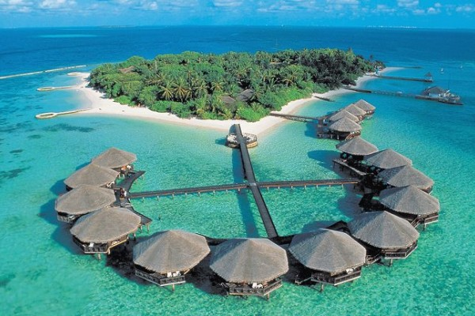

Pemandangan Alam Terindah di Indonesia
Mar 31, 2021Viewes : 3,487,497Nah, kalau kamu mau mencari referensi tempat wisata di Indonesia yang ngehits banget ini. Kira-kira tempat mana yang yang bakal kamu kunjungi pas liburan nanti?
Baca SelengkapnyaGunung Tertinggi di Indonesia
Mar 31, 2021Views : 5,887,897Indonesia merupakan Negara kepulauan terbesar di Dunia ini tentu memiliki banyak gunung-gunung tinggi yang tersebar di seluruh pulau Indonesia. Pegunungan Indonesia juga memiliki keindahan yang luar biasa.
Baca Selengkapnya
Pantai Terindah di Gunung Kidul
Mar 31, 2021Views : 2,232,443Pantai di Jogja memang tidak hanya Parangtritis saja. Di Gunung Kidul bahkan ada beberapa pantai yang masih sangat sepi dan alami.
Baca Selengkapnya